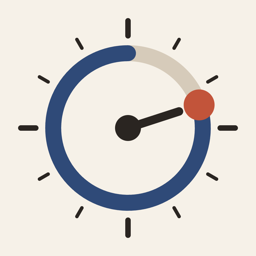

勉強ペースメーカー サポート
試験まで、勉強のペースを作る
「勉強ペースメーカー」（ホーム画面では「勉強ペース」）は、試験日までに勉強に使える時間を数え、教材の範囲を毎日に割り振るアプリです。「今日」の画面に出た範囲を終えたらチェックを付けるだけで、遅れは週に1日の予備日で取り戻し、試験の前には全体を見直す復習期間を取ります。
よくある質問
チェックを押し間違えました。
押した直後なら、もう一度チェックを押すと元に戻ります。そのあとに直すときは、教材の下の「もっと進めた」から、どこまで終わったかを入れ直してください。
今日の範囲の途中までしか進みませんでした。
「途中まで記録する」から、終わったところを入れてください。残りは予備日で取り戻せるように割り振ります。
勉強できない日や、いつもより時間が取れる日があります。
「設定」の「例外の日」で、その日の時間を入れてください。今日からの範囲を割り振り直します。
期末試験のように、科目ごとに試験日が違います。
「設定」の「科目」で科目に分けると、教材ごとに、その科目の試験日までに割り振ります。
続けて別の試験を受けます。
「設定」の「試験を足す」で、次の試験を入れられます。勉強の期間は重ねられないので、次の試験は今の試験日の翌日から始めます。
ウィジェットを置きたい。
ホーム画面かロック画面を長押しして「編集」→「ウィジェットを追加」から「勉強ペース」を選んでください。「残り日数」と「残り時間」の2種類があります。アプリの「設定」の「ウィジェット」でも、置き方を説明しています。
お知らせが届きません。
iPhone の「設定」→「通知」→「勉強ペース」で、通知がオンになっているか確かめてください。今日の分を終えた日や、勉強の時間を取っていない日には、お知らせを出しません。
記録はどこに保存されますか？
お使いの iPhone の中だけに保存します。アプリを削除すると、記録も消えます。
お問い合わせ
不具合のご報告やご要望は、次のメールアドレスまでお願いします。お使いの端末（例：iPhone 16）と iOS のバージョンを添えていただけると助かります。
ryohei.dev.support@gmail.com
Study Pacemaker Support
Study Pacemaker (勉強ペースメーカー) counts the study time you have left before your exam and spreads your materials over each day. Check off today's range when you finish it. Delays are made up on one buffer day a week, and a review period before the exam lets you go over everything again. The app is in Japanese.
FAQ
I checked an item by mistake.
Right after checking, tap the check again to undo it. Later, use "もっと進めた" under the material to re-enter how far you got.
I only finished part of today's range.
Use "途中まで記録する" to enter where you stopped. The rest is planned so you can make it up on the buffer day.
Some days I can't study, or have more time than usual.
Enter that day's time under "例外の日" (Exception days) in Settings. The plan is redone from today.
Each subject has a different exam date.
Split the exam into subjects under "科目" (Subjects) in Settings. Each material is then planned up to its subject's exam date.
Where is my data stored?
Only on your iPhone. Deleting the app deletes your records.
Contact
For bug reports and requests, please email us. Including your device model and iOS version helps.
ryohei.dev.support@gmail.com